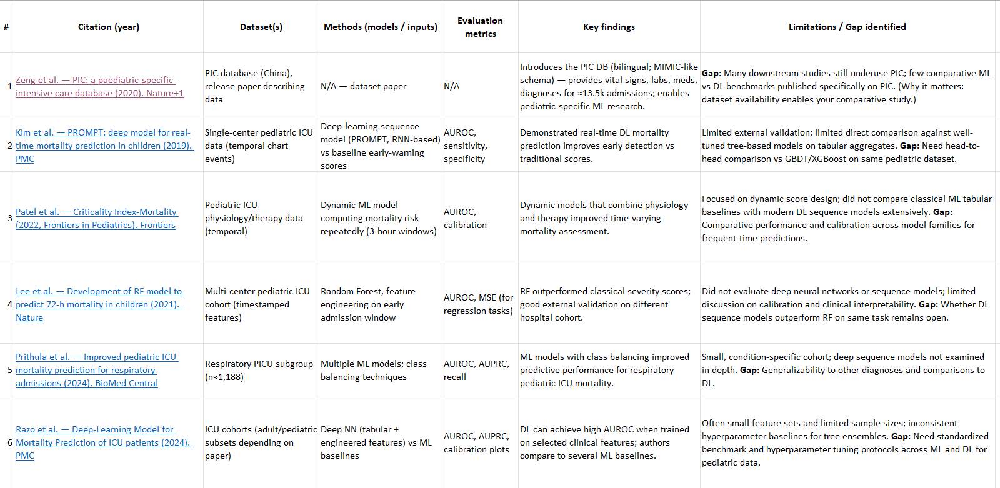

Literature Images

Image not available
"Systematic evaluation of ML and DL models for pediatric ICU prediction tasks: ICU mortality, in-hospital mortality, and length of stay."
Pediatric ICU data is heterogeneous, imbalanced, and temporally complex, making reliable outcome prediction difficult. This work compares linear models, tree-based ensembles, and gradient boosting to identify robust, clinically practical performance across mortality and LOS outcomes.
PIC (MAINCLD) cohort with structured clinical variables for mortality and LOS prediction.
Logistic Regression, Random Forest, and XGBoost compared task-wise.
ICU Mortality
AUROC 0.951
• AUPRC 0.548
• Best: XGBoost
• Average Precision = 0.545
• Baseline precision = 0.07
This indicates the model is generalizing well along with low gap in train and test ROC AUC of 0.048 (~5%).
In-Hospital Mortality
AUROC 0.95
• Best: XGBoost
• Similar trend to ICU task
Length of Stay (LOS)
R² 0.897
• MAE 0.231
• RMSE 0.354
• Best: XGBoost
| Model | AUROC ↑ | AUPRC ↑ | Notes |
|---|---|---|---|
| Logistic Regression | 0.913 | 0.400 | Strong linear baseline |
| Random Forest | 0.926 | 0.434 | Captures nonlinearity |
| XGBoost | 0.951 | 0.548 | ML ceiling (best) |
| Model | AUROC ↑ | AUPRC ↑ | Notes |
|---|---|---|---|
| Logistic Regression | ~0.90+ | Moderate | Similar difficulty |
| Random Forest | ~0.92+ | Improved | Nonlinear gains |
| XGBoost | ~0.94–0.95 | Best | Consistent with ICU mortality |
Behavior matches ICU mortality but appears slightly noisier, while preserving the same model ranking.
| Model | MAE ↓ | RMSE ↓ | R² ↑ | Notes |
|---|---|---|---|---|
| ElasticNet | 0.373 | 0.500 | 0.795 | Linear lower bound |
| Random Forest | 0.271 | 0.400 | 0.869 | Strong nonlinear model |
| XGBoost | 0.231 | 0.354 | 0.897 | ML ceiling (best) |
Project Guide
Dr. Akshay Jadhav
Student
Divyanshu Patel
2427030037